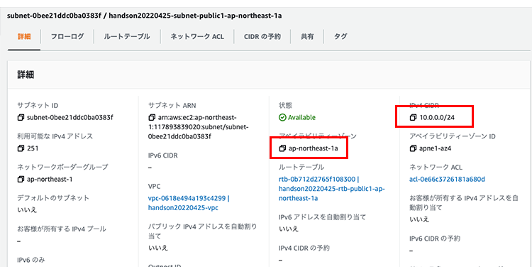

Amazon Web Services (AWS) を利用して、セキュアでスケーラブルなウェブサービスの構築手順を体験できるハンズオンを実施いたします。
AWS を使ってより安全にサービスを運用する方法、ウェブサービスの規模に合わせて、柔軟にシステムを拡張する方法を体験できる内容です。
準備事項
インターネットに接続可能な PC

AWS を利用するにはインターネット接続が必要です。Windows、mac、Linux をご準備ください。本ハンズオン資料は mac にて作成しています。
AWS アカウント
 AWS アカウントを事前にご準備ください。
AWS アカウントを事前にご準備ください。
ブラウザ
 Firefox もしくは Google Chrome を推奨します。本ハンズオン資料は Google Chrome にて検証しています。
Firefox もしくは Google Chrome を推奨します。本ハンズオン資料は Google Chrome にて検証しています。
AWS のセキュリティやスケーラビリティを 高める機能・サービス 1/6 インターネットからのトラフィック (インバウンド) をブロックするだけでなく、EC2 からのトラフィック (アウトバウンド) も制限できるファイアウォール機能です。
インターネットからのトラフィック (インバウンド) をブロックするだけでなく、EC2 からのトラフィック (アウトバウンド) も制限できるファイアウォール機能です。  個々のインスタンスごとに、インバウンド、アウトバウンドに対して下記の許可ルールを定義できます。ルールは ステートフル で扱われ、明示ルールが無い通信は拒否されます。
個々のインスタンスごとに、インバウンド、アウトバウンドに対して下記の許可ルールを定義できます。ルールは ステートフル で扱われ、明示ルールが無い通信は拒否されます。
インバウンド
- プロトコル (TCP/UDP/ICMP)
- ポート範囲 (ポート番号の範囲)
- 送信元 (アクセス元のIPアドレス)
アウトバウンド
- プロトコル (TCP/UDP/ICMP)
- ポート範囲 (ポート番号の範囲)
- 送信先 (アクセス先のIPアドレス)
AWS のセキュリティやスケーラビリティを 高める機能・サービス 2/6 VPC はプライベートな仮想ネットワークサービスです。VPC を使うと AWS クラウド内にお客様専用のプライベートアドレスの空間を構築できます。
VPC はプライベートな仮想ネットワークサービスです。VPC を使うと AWS クラウド内にお客様専用のプライベートアドレスの空間を構築できます。
社内ネットワークとインターネット VPN やキャリアの閉域網で接続ができます。

VPCとサブネットについて
- 1 つの VPC は、1 つのネットワークアドレス (CIDR) で定義します。
- 1 つの VPC 内には、複数のサブネットを作成することができます。
- サブネットは特定のアベイラビリティーゾーン内に配置します。

CIDR | IP アドレス数 |
xxx.xxx.xxx.xxx/16 | 65,531 |
xxx.xxx.xxx.xxx/20 | 4,091 |
xxx.xxx.xxx.xxx/24 | 251 |
xxx.xxx.xxx.xxx/28 | 11 |
上記は払い出される IP アドレス数から、AWS の予約 IP 数を抜いた「ユーザーが利用できる IP 数」です。
各サブネットにおいて先頭の 4 IP アドレスと最後の 1 IP アドレスは AWS 側で確保されます
- AWS > ドキュメント > Amazon VPC > ユーザーガイド > VPC とサブネットの概要 - IPv4 用の VPC とサブネットのサイズ設定
AWS のセキュリティやスケーラビリティを 高める機能・サービス 3/6
各サブネットにはルートテーブルがアタッチされます。
ルートテーブルの設定を変更することでデータの流れを制御できます。
パブリックサブネット
ルートテーブル: rtb-XXXXXXXX
送信先 | ターゲット |
10.0.0.0/16 | local |
0.0.0.0/0 | igw-XXXXXXXX |
プライベートサブネット
ルートテーブル: rtb-XXXXXXXX
送信先 | ターゲット |
10.0.0.0/16 | local |
AWS のセキュリティやスケーラビリティを 高める機能・サービス 4/6
制御可能な項目はセキュリティーグループと同じで、ステートフル (SG) かステートレス (NACL) かの違いがあります。

Network Access Control List
- 個々のサブネットごとにアクセス制御が可能
- インバウンド、アウトバウンドに対して下記の設定が可能
インバウンド
- Port range (ポート番号)
- Source (アクセス元 IP アドレス)
- Allow/Deny
アウトバウンド
- Port range (ポート番号)
- Destination (アクセス先 IP アドレス)
- Allow/Deny
制御可能な項目はセキュリティグループと同じです。
セキュリティグループは、ステートフルで動作し、NACL はステートレスで動作します。
AWS のセキュリティやスケーラビリティを 高める機能・サービス 5/6
AWS 自体のリソース操作をよりセキュアに行うための認証・認可の仕組みです。
AWS 利用者の認証とアクセスポリシーを「グループ」「ユーザー」「ロール」で管理します。
- 実行出来る操作を IAM ポリシーで設定
- ユーザーごとに認証情報の設定が可能
- マネージメントコンソールにはユーザ名とパスワードを使用 さらに、MFA (多要素認証) の利用が推奨
- API にはアクセスキーとシークレットキーを使用
IAM ポリシーで必要最小限のみ付与

AWS のセキュリティやスケーラビリティを 高める機能・サービス 6/6
AWS アカウント (ルートアカウント) の保護
AWS アカウント (ルートアカウント) は、ハードウェアトークンで保護することが推奨されています。
また、ハードウェアトークンは金庫などで管理することが推奨されています。

IAM アカウントの保護
IAM アカウントは、個人で利用するアカウントです。
こちらは、仮想 MFA 対応のスマホアプリにて保護すると効率的にご利用いただけます。

MFA (多要素認証) を設定すると、AWS アカウントサインイン時に 6 桁 のコードを求められるようになります。

ハンズオンの流れ
フェーズ 1
WordPress サイトを最小構成でスタートする。
- サーバー 1 台構成

フェーズ 2
スケールできるアーキテクチャに移行する準備をする。
- Web + DB (サーバー 2 台構成)

フェーズ 3
Web サーバーがスケールできる構成にする。
- LB + Web x 2 + DB (サーバー 3 台構成)

オプション
DB サーバーを冗長化された構成にする。
- LB + Web x 2 + DB x 2 (サーバー 4 台構成)

最終
DB サーバーを冗長化された構成にする。
- LB + Web x 2 + DB x 2 (サーバー 4 台構成)

【補足】無料利用枠 (個人アカウントでご参加の方向け)
ハンズオンの一部は AWS 無料利用枠の範囲で進めることができます。また、ハンズオンが終了した後で、作成したリソースを全て削除すると課金はされません。
<1年間、以下範囲が毎月無料で利用できます>
- EC2: Windows/Linux/RedHat など の t2.micro インスタンスを合計約 1ヶ月分
- EBS: 合計 30GB の General Purpose (SSD) と 1GB のスナップショットを合計約 1ヶ月分
- RDS: MySQL/PostgreSQL など を 20GB まで db.t2.micro インスタンスを合計約 1ヶ月分 (シングルAZ構成限定)
- ELB: 合計約 1ヶ月分、15GB の処理 トラフィック:インターネットへのデータ送信 15GB
スクリーンキャプチャに表示されている情報について
リソースの各種 ID (vpc-XXXXXX、subnet-XXXXXX、i-XXXXXX など) は AWS 全体で ユニークとなっており、スクリーンキャプチャに記載の ID と実際に操作されて作成される ID は各自で異なります。
Elastic IP (固定IPアドレス) なども各自で異なります。
画面のデザイン等が変更されて実際とは異なっていることがあります。画面の項目名等から判断して操作下さい。
サーバー 1 台構成
最小構成で最も低コストですが、拡張性が低く、性能を一定以上上げることができません。
拡張性: 低
拡張するには 1 台のインスタンスタイプを大きくします。
冗長性: 低
インスタンスが稼働する物理サーバが壊れると一旦停止になりますが、同じアベイラビリティーゾーン内の問題の無いサーバですぐ起動できます。
AWSマネジメントコンソールへのログイン
ログイン方法は利用するアカウント種類によって異なります。
IAM アカウントをご利用の場合
会社等で、IAM アカウントを本ハンズオン用に準備されているケース
事前にログイン情報が記載された csv ファイル (user1.csv 等) を確認してください。そのファイルに、ログイン用の URL、User Name、パスワードが記載されていますので、 それに従ってログインしてください。
AWS のルートアカウント(個人アカウント)をご利用の場合
https://console.aws.amazon.com にブラウザでアクセスして、アカウントの E メールアドレスとパスワードでログインしてください。
サインインするとホーム画面が表示されます。
左上の AWS アイコンをクリックするとホームに戻ります。
サービスをクリックすると、EC2 や RDS といった各種 AWS サービス名へのリンクにアクセスできます。
テキストボックスにサービス名を入力することで候補が表示されるので便利です。
リージョンを変更する (シンガポール)
AWS マネジメントコンソールに初めてサインインすると、「バージニア北部」リージョンが表示されます。練習で、シンガポールリージョンに移動してみたいと思います。
このリージョン名をクリックして候補から、アジアパシフィック (シンガポール) ap-southeast-1 を選択してください。
リージョンを変更する (シドニー)
画面遷移して「シンガポール」リージョンが表示されたら、次は「シドニー」リージョンに移動してみてください。「シンガポール」をクリックし、「アジアパシフィック (シドニー) ap-southeast-2」を選択してください。
リージョンを変更する (東京)
リージョンの移動は完璧でしょうか。
それでは、本日構築する「東京」リージョンに移動してください。「シドニー」をクリックし、「アジアパシフィック (東京) ap-northeast-1」を選択してください。
デフォルトリージョンを設定する
AWS マネジメントコンソールは「最後に利用したリージョン」を表示するようになっています。
これを変更するには、[設定] を開き、デフォルトリージョン の「最後に使用したリージョン」から希望のリージョンに変更してください。
VPC コンソールにアクセス
左上の サービス をクリックして、表示されたメニューから ネットワーキングとコンテンツ配信 をクリック、表示された VPC を選択します。
VPC コンソールに画面遷移します。
VPC ウィザードで VPC コンポーネントを作成する
VPC コンソールが表示されたら、[VPC ウィザードを起動] ボタンをクリックしてください。
VPC ウィザード - 全貌
VPC ウィザードは文字通り、画面の手順に沿ってクリックして進めていくと VPC が構築できる便利なウィザード機能です。
以前は画面が遷移していく形でしたが、2022年4月現在はリニューアルして 1 ページで収まらないほど大きな画面になりました。全貌は以下の画像の通りですが、順番に設定していきます。
まず 作成するリソース は「VPC、サブネットなど」を選択します。
VPC ウィザード - 名前タグ
次に、名前タグを設定します。「handsonyyyymmdd(今日の日付)」などの名前を入力してみてください。
右側に表示された VPC やサブネット、ルートテーブル、インターネットゲートウェイ、エンドポイントなどの名前タグが動的に設定されます。
以前のウィザードでは手入力だったので便利になりました。
VPC ウィザード - IPv4 CIDR ブロック
本ハンズオンで作成する VPC のレンジは 10.0.0.0/16 にしますので、

デフォルトで入力されている「10.0.0.0/16」のまま、次に進んでください。
VPC ウィザード - アベイラビリティーゾーン
アベイラビリティーゾーンは 2 のままで大丈夫です。AZ のカスタマイズから、どのアベイラビリティーゾーンを利用するか決めることができます。本ハンズオンでは、AZ-a と AZ-c を利用します。
本ハンズオンでは、パブリックサブネットを二つ作ります。
それぞれ、10.0.0.0/24、10.0.1.0/24 のアドレス空間を利用しますので、
ap-northeast-1a の IP アドレスを「10.0.0.0/24」に、ap-northeast-1c の IP アドレスを「10.0.1.0/24」と入力してください。
続いて、プライベートサブネットの IP アドレスも二つ作ります。
それぞれ、10.0.2.0/24、10.0.1.3/24 のアドレス空間を利用しますので、
ap-northeast-1a の IP アドレスを「10.0.2.0/24」に、ap-northeast-1c の IP アドレスを「10.0.3.0/24」と入力してください。
VPC ウィザード - NAT ゲートウェイ、VPC エンドポイント
NAT ゲートウェイは利用しません。
VPC エンドポイントも今回は利用しないので なし にしてください。
DNS オプションはどちらもチェックを入れてください。
[VPC を作成] ボタンをクリックしてください。
プレビューにも表示されている通り VPC、サブネット、ルートテーブル、インターネットゲートウェイが作成されます。

VPC が作成されたら [VPC を表示] ボタンをクリックしてください。
ウィザードで作成された VPC を確認
[VPC を表示] ボタンをクリックすると、作成された VPC の詳細画面に遷移するので、左のメニューペインににある VPC のリンクをクリックしてください。
左のメニューペインににある VPC でフィルタリング: のテキストボックスをクリックすると、候補が表示されますので、作成した VPC を選択してください。
作成した VPC だけがフィルタリングされて表示されます。
先ほど作成した VPC が存在するか (正しく絞り込めているか) を確認してください。 この VPC の IPv4 CIDR が 10.0.0.0/16 であることを確認してください。
ウィザードで作成されたサブネットを確認
左のメニューペインにあるサブネットをクリックします。
サブネット一覧が表示されますので、AZ-a の名前が記載されたリソースにチェックを入れてください。
ページ下部のペインに詳細が表示されますので、アベイラビリティゾーンが ap-northeast-1a であること、IPv4 CIDR が 10.0.0.0/24 であることを確認してください。

ウィザードで作成されたルートテーブルを確認
詳細ペインで、ルートテーブル のタブをクリックしてください。
VPC のネットワークアドレス 10.0.0.0/16 のターゲットが local に、 デフォルトルートの 0.0.0.0/0 のターゲットがインターネットゲートウェイ (igw-XXXX) になっており、インターネットと通信できる設定になっています。
IAM ロールを作成する
EC2 インスタンスには、Linux OS の場合は SSH で、Windows OS の場合は RDP で接続しますが、本ハンズオンでは SSH ポートを開放せずに AWS Systems Manager のセッションマネージャー経由で接続をします。
サービス から、セキュリティ、ID、およびコンプライアンス をクリックし、IAM を選択します。
IAM コンソールに画面遷移したら、左側のメニューメインから ロール をクリックします。
ロール画面に遷移したら [ロールを作成] ボタンをクリックします。
信頼されたエンティティタイプが AWS のサービス が選択されていること、ユースケースは EC2 が選択されていることを確認して、[次へ] ボタンをクリックしてください。

許可を追加 画面に推移するので、テキストボックスに AmazonSSMManagedInstanceCore を入力し、表示された AmazonSSMManagedInstanceCore のチェックボックスにチェックを入れて、[次へ] ボタンをクリックしてください。
ロール名 には識別しやすい任意のロール名を入力してください。
ここでは、handson-ec2-role とします。
最下部まで進み、[ロールを作成] ボタンをクリックします。
ロールが作成されたら、本ロールを SSM Agent が利用できるように設定します。
テキストボックスにロール名を入力し、ENTER キーを押下します。
ロールが表示されたら、リンクをクリックしてください。
ロールの詳細画面に遷移したら、[信頼関係] タブをクリックし、[信頼ポリシーを編集] ボタンをクリックしてください。

以下のような形でポリシーが表示されるので、
＜変更前＞
{
"Version": "2012-10-17",
"Statement": [
{
"Effect": "Allow",
"Principal": {
"Service": "ec2.amazonaws.com"
},
"Action": "sts:AssumeRole"
}
]
}
"Service": ["ec2.amazonaws.com","ssm.amazonaws.com"] に書き換えてください。
＜変更後＞
{
"Version": "2012-10-17",
"Statement": [
{
"Effect": "Allow",
"Principal": {
"Service": ["ec2.amazonaws.com","ssm.amazonaws.com"]
},
"Action": "sts:AssumeRole"
}
]
}
EC2 コンソールを開く
左上のサービスボタンをクリックして、コンピューティングから EC2 を選択してください。
テキストボックスに入れていただいても候補が表示されます。
EC2 コンソールに画面遷移したら [インスタンスを起動] ボタンをクリックしてください。
[インスタンスを起動] のボタンが展開されるのでクリックしてください。
ステップ1: Amazon マシンイメージ(AMI)
本ハンズオンでは、Amazon Linux 2022 の AMI を利用します。
テキストボックスに以下 AMI ID を入力して、ENTER キーをクリックしてください。
AMI 名:
al2022-ami-2022.0.20220315.0-kernel-5.15-x86_64
AMI ID:
ami-082c70eb5ed5441a1
左側のペインで コミュニティ AMI (1) をクリックして、左側の詳細ペインに表示された [選択] ボタンをクリックしてください。
ステップ2: インスタンスタイプの選択
インスタンスタイプが t2.micro であることを確認して、[次のステップ:インスタンスの詳細の設定] ボタンをクリックしてください。
ステップ３: インスタンスタイプの詳細の設定
このページでは、インスタンスの詳細設定を行います。
ネットワークで、ご自身で作成された VPC を選択してください。
ネットワークにて VPC を選択すると、サブネットの項目が「選択した VPC でフィルタリング」されます。
10.0.0.0/24 に設定したサブネットを選択してください。
自動割り当てパブリック IP は有効にしてください。
中断にあるロールは、先の手順で作成したロールを選択してください。

ページ下部まで進み、ユーザーデータに以下をコピペしてください。
以下のユーザーデータを流し込んだら、[次のステップ:ストレージの追加] ボタンをクリックしてください。
#!/bin/bash
dnf -y update
# SELinux 無効化
setenforce 0
# タイムゾーンを東京に変更
timedatectl set-timezone Asia/Tokyo
localectl set-locale LANG=ja_JP.utf8
# SSM Agent インストール
dnf install -y https://s3.amazonaws.com/ec2-downloads-windows/SSMAgent/latest/linux_amd64/amazon-ssm-agent.rpm
systemctl enable amazon-ssm-agent
systemctl start amazon-ssm-agent
# Nginx インストール
dnf install -y nginx.x86_64
# php インストール
dnf install -y php
dnf install -y php-mbstring php-devel php-gd php-pdo php-xml php-mysqlnd php-json
# PHP FastCGI インストール
dnf install -y php-fpm
#php-fpm 設定変更
sed -i -e "s/user = apache/user = nginx/g" /etc/php-fpm.d/www.conf
sed -i -e "s/group = apache/group = nginx/g" /etc/php-fpm.d/www.conf
systemctl start php-fpm.service
# mariadb インストール
dnf install -y mariadb105-server
sudo systemctl start mariadb
mysql -u root -e "create database wp_database; grant all privileges on wp_database.* to wp_admin@localhost identified by 'wordpress';"
# WordPress インストール
cd /tmp
wget https://ja.wordpress.org/latest-ja.tar.gz
tar -xzf latest-ja.tar.gz
mv wordpress /usr/share/nginx/html
chown -R nginx. /usr/share/nginx/html
# WordPress ディレクトリとフォルダーの権限設定
find /usr/share/nginx/html/wordpress -type d -exec chmod 705 {} +
find /usr/share/nginx/html/wordpress -type f -exec chmod 604 {} +
# WordPress 用の Nginx 設定ファイル
cat << EOS >> /etc/nginx/conf.d/wordpress.conf
server {
index index.php index.html;
root /usr/share/nginx/html/wordpress;
location ~* /wp-config.php {
deny all;
}
location / {
try_files \$uri \$uri/ /index.php\$is_args$args;
}
location ~ \.php\$ {
include fastcgi.conf;
fastcgi_pass unix:/run/php-fpm/www.sock;
}
}
EOS
# Nginx スタート
systemctl enable nginx.service
systemctl start nginx.service
ステップ4: ストレージの追加
選択した AMI は、8GB のストレージを利用します。
また、汎用 SSD (gp3) が選択されます。
ストレージは、特に変更せずに、次に進みます。
ステップ5: タグの追加
インスタンスを区別できるようにタグに名前を設定します。
IAM ユーザを利用している場合、他ユーザと区別が付くように -user1 等ユーザ名を付けると良いでしょう。
ここでは、handson-ec2-wordpress とします。
□ インスタンス と
□ ボリューム と
□ ネットワークインターフェイス
のチェックボックスにチェックを入れると、それぞれのリソースに名前タグが設定されます。
[次のステップ:セキュリティグループの設定] をクリックしてください。

ステップ6: セキュリティグループの設定
新しいセキュリティグループを作成する のオプションボタンにチェックが入っていることを確認してください。
セキュリティグループ名と説明は任意の名称を設定してください。本ハンズオンでは、web-sg としました。
タイプ を「SSH」から「HTTP」に変更して、ソースを「マイ IP」にしてください。
下部に警告メッセージが表示されますが、セッションマネージャー経由で接続するので問題ありません。
ソース を「任意の場所」にしたら [確認と作成] ボタンをクリックしてください。
ステップ6: インスタンス作成の確認
確認画面が表示されます。内容確認して間違えなければ [起動] ボタンをクリックしてください。
キーペアを指定する画面になります。セッションマネージャーを利用するため、本ハンズオンでは利用しません。
[キーペアなしで続行] を選択し、チェックボックスにチェックを入れて、[インスタンスの作成] ボタンをクリックしてください。
EC2 インスタンスの作成が始まりました。
[インスタンスの表示] ボタンをクリックしてください。
起動したインスタンスは、AMI (Amazon マシンイメージ) から復元されたあと、ユーザーデータに入力したスクリプトによって、インストールが行われていきます。
下図の通り、
- インスタンスの状態が 実行中 になること
- ステータスチェックが 2/2 のチェックに合格しました
になることを確認してください。(これには数分かかります。)

また、バックグラウンドでは並行してユーザーデータによるインストールが進行していきます。
インストールが完了まで少し時間がかかりますが、このインストールの途中でセッションマネージャーが利用できる状態になります。
ユーザーデータで行う処理
- SELinux 無効化
Amazon Linux 2022 は Fedora ベースの OS で SELinux が有効になっています。
SELinux が有効だと Nginx が正しく動かないため無効化します。 - タイムゾーンを東京に変更
EC2 インスタンスは大抵 UTC にて稼働します。そのため、起動後にタイムゾーンを Asia/Tokyo にします。 - ロケールを日本語に変更
- SSM エージェントのインストール
SSM エージェントをインストールすると、セッションマネージャーが利用できるようになります。 - Nginx インストール
Web サーバーとして稼働させるため、Nginx をインストールします。 - php インストール
WordPress の稼働に必要な PHP と PHP モジュールをインストールします。 - MariaDB インストール
WordPress で利用する MariaDB をインストールします。 - WordPress インストール
最新版の WordPress をダウンロードしてインストールします。
セッションマネージャーによる接続
インスタンスが起動したらセッションマネージャーで接続してみましょう。
EC2 コンソールの左側のメニューペインにある インスタンス をクリックして、右側に表示されるインスタンス一覧から、起動したインスタンスを見つけてください。
インスタンスの左側にあるチェックボックスにチェックを入れて、[接続] ボタンをクリックしてください。

インスタンスが複数表示されている場合は、テキストボックスにインスタンス名を入れたり、ステータスを running でフィルタリングするなどすると効率的に見つけることができます。

[セッションマネージャー] タブを選択し、[接続] ボタンをクリックします。

接続が成功すると、ブラウザの新しいタブが開いて以下のようなプロンプトで停止します。
sh-5.1$
スイッチユーザーして、root ユーザーに昇格してください。
sh-5.1$ sudo -i
#
本ウインドウは閉じずにそのままにしておいてください。
次はブラウザから Web ページにアクセスしてみます。
EC2 コンソールでインスタンスを選択したら、下部の詳細ペインに表示された パブリック IPv4 アドレス を見つけて、アドレスの左側にあるアイコンをクリックしてください。IP アドレスがクリップボードにコピーされます。

Chrome タブを追加して、アドレスバーに貼り付けて、ENTER キーを押下しアクセスしてください。WordPress のセットアップ・ウェルカムページが表示されます。

Elastic IP (EIP) を取得
インスタンスを停止/開始した後も、同じ IP アドレスが使用できるよう、固定 IP アドレスであるElastic IP を取得します。
EC2 コンソールにて、左側のメニューペインから Elastic IP をクリックし、ページ上部に表示された [Elastic IP アドレスを割り当てる] ボタンをクリックしてください。

Elastic IP アドレスを割り当てる の画面に遷移するので、Name タグを設定してください。
こちらも任意ですが、EC2 インスタンスのタグと揃えると識別しやすいです。
キー | 値 |
Name | handson-ec2-wordpress |

Elastic IP アドレスが割り当てられたら、割り当てられた IPv4 アドレスを控えておいてください。
メモできたら [この Elastic IP アドレスを関連づける] をクリックしてください。

インスタンス に起動した EC2 インスタンスを指定し、プライベート IP アドレスを選択して、[関連付ける] ボタンをクリックしてください。

アタッチしたアドレスは、EC2 の詳細画面からも確認できますので再度チェックしておいてください。
MySQL と Nginx が動いていることを確認
先ほど接続したセッションマネージャーのブラウザタブに戻り、MySQL と Nginx が動いていることを確認したいと思います。
以下の root 権限にて、
sh-5.1$ sudo -i
#
以下コマンドを入力してください。
systemctl status mariadb
以下のような running ステータスが返れば正常に起動しています。
[Q] キーを押下すると、抜けることができます。
# systemctl status mariadb
● mariadb.service - MariaDB 10.5 database server
Loaded: loaded (/usr/lib/systemd/system/mariadb.service; disabled; vendor preset: disabled)
Active: active (running) since Wed 2022-04-06 21:16:03 JST; 1h 48min ago
Docs: man:mariadbd(8)
https://mariadb.com/kb/en/library/systemd/
Main PID: 29016 (mariadbd)
Status: "Taking your SQL requests now..."
Tasks: 8 (limit: 1096)
Memory: 64.7M
CPU: 1.324s
CGroup: /system.slice/mariadb.service
└─29016 /usr/libexec/mariadbd --basedir=/usr
4月 06 21:16:03 ip-10-0-0-44.ap-northeast-1.compute.internal mariadb-prepare-db-dir[28974]: See the MariaDB Knowledgebase at>
(中略)
4月 06 21:16:03 ip-10-0-0-44.ap-northeast-1.compute.internal systemd[1]: Started MariaDB 10.5 database server.
lines 1-23/23 (END)
続いて、Nginx サーバーを確認します。
以下コマンドを入力してください。
systemctl status nginx
以下のような running ステータスが返れば正常に起動しています。
[Q] キーを押下すると、抜けることができます。
# systemctl status nginx
● nginx.service - The nginx HTTP and reverse proxy server
Loaded: loaded (/usr/lib/systemd/system/nginx.service; enabled; vendor preset: disabled)
Drop-In: /usr/lib/systemd/system/nginx.service.d
└─php-fpm.conf
Active: active (running) since Wed 2022-04-06 21:16:16 JST; 1h 47min ago
Process: 29098 ExecStartPre=/usr/bin/rm -f /run/nginx.pid (code=exited, status=0/SUCCESS)
Process: 29099 ExecStartPre=/usr/sbin/nginx -t (code=exited, status=0/SUCCESS)
Process: 29100 ExecStart=/usr/sbin/nginx (code=exited, status=0/SUCCESS)
Main PID: 29101 (nginx)
Tasks: 3 (limit: 1096)
Memory: 5.9M
CPU: 61ms
CGroup: /system.slice/nginx.service
├─29101 nginx: master process /usr/sbin/nginx
├─29102 nginx: worker process
└─29103 nginx: worker process
4月 06 21:16:16 ip-10-0-0-44.ap-northeast-1.compute.internal systemd[1]: Starting The nginx HTTP and reverse proxy server...
(中略)
4月 06 21:16:16 ip-10-0-0-44.ap-northeast-1.compute.internal systemd[1]: Started The nginx HTTP and reverse proxy server.
lines 1-21/21 (END)
セッションマネージャーによる接続がうまくいかない場合
- インスタンスは完全に起動完了していますでしょうか。ステータスチェックは 2/2 になっていますか？
- 起動時に指定した内容どおりに起動しているでしょうか?
- 接続先のインスタンス ID は正しいですか？
http://<Elastic IPアドレス>/wordpress/ を開いて、WordPressの初期設定を始めます。
上記 URL にアクセスすると、自動で setup-config.php にリダイレクトします。
[さあ、始めましょう!] ボタンをクリックします。

作成した MySQL の DB 設定に基づき、設定します。
項目 | 値 |
データベース名 | wp_database |
ユーザー名 | wp_admin |
パスワード | wordpress |
データベースのホスト名 | localhost |
テーブル接頭辞 | wp_ |
以下の画面が表示されるので、上記の値を入力して、[送信] ボタンをクリックしてください。

以下画面に遷移するので、[インストール実行] ボタンをクリックしてください。
以下画面に遷移するので、画像の通り入力してください。
[WordPress をインストール] ボタンをクリックしたあと、20 秒程度かかります。
ブラウザのローディングが終わるまで、リロードなど行わずに少々お待ちください。
以下の画面が表示されたらセットアップ完了です。
[ログイン] ボタンをクリックしてください。
WordPress ログイン画面
以下、ログイン画面が表示されるので先ほど入力したユーザー名とパスワードを入力してください。
[ログイン] ボタンをクリックしてください。
WordPress 管理者画面
ユーザー名とパスワードが正しく入力され、認証が通れば WordPress の管理者画面が表示されます。
- [投稿] をクリックして、任意の新規ブログポストを書くことができます。
- ブログタイトルをクリックするとブログが表示できます。
ブログの起動確認
Wordpress ブログが実行できていることを確認します。
(nginxの画面が出る場合はリロードしてみてください)
前ページの管理画面に戻るには http://EIPアドレス/wp-admin/ にアクセスします。
Amazon Aurora
Amazon Aurora は、標準的な MySQL データベースと比べて最大で 5 倍、標準的な PostgreSQL データベースと比べて最大で 3 倍高速です。また、商用データベースと同等のセキュリティ、可用性、信頼性を、10 分の 1 のコストで実現します。
Amazon RDS
Amazon Relational Database Service (RDS) は、AWS にて運用管理されるマネージドRDBMS サービスです。 MySQL、Oracle、SQL Server、PostgreSQL、MariaDB、Aurora が提供されています。
バックアップやフェイルオーバーに対応した DB を数クリックで利用可能にします。
メンテナンスフリーで、自動バックアップや、パッチ当てなどが自動で行われます。